小纸船 - codingplan-chat
基于火山引擎 CodingPlan
🔥 AI 编程助手 · 基于火山引擎 CodingPlan
💎 液态玻璃界面 · iOS 风格设计
☁️ 云端备份 · 数据永不丢失
🌓 深色/浅色 · 日夜模式切换
📱 手机优化 · 随时随地使用
取消
同意
codingplan-chat
v0.6.6
✕
+
新建对话
历史对话
还没有对话记录
开始你的第一次对话吧
小纸船 - codingplan-chat
在线 · 智能模式
你好！我是小纸船 - codingplan-chat，可以帮你： · 写代码、改代码、查 Bug · 解答编程和技术问题 · 解释概念、翻译代码 直接输入问题就行！
介绍一下你自己
今天有哪些 AI 新闻
帮我写一段文案
推荐几本好书
讲一个有趣的冷知识